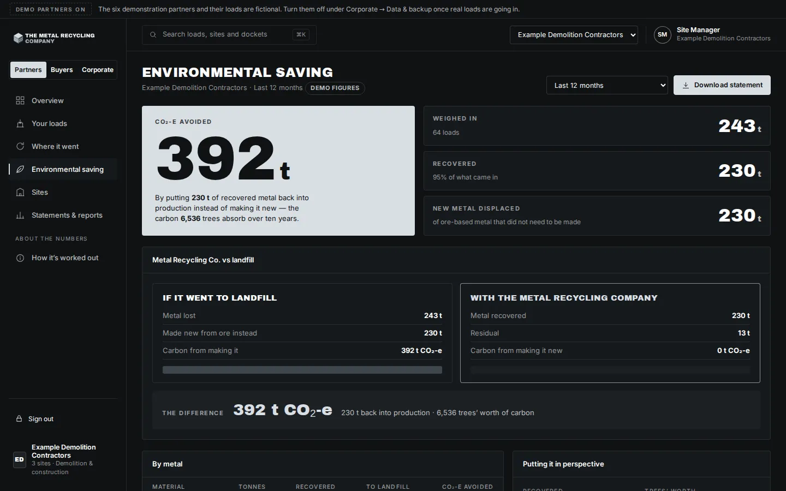
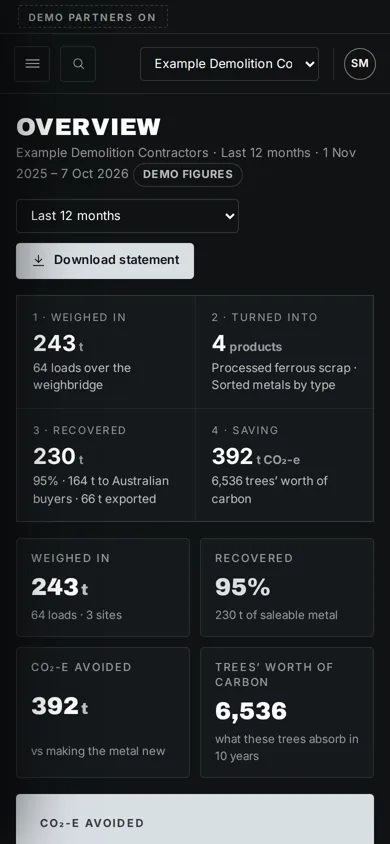
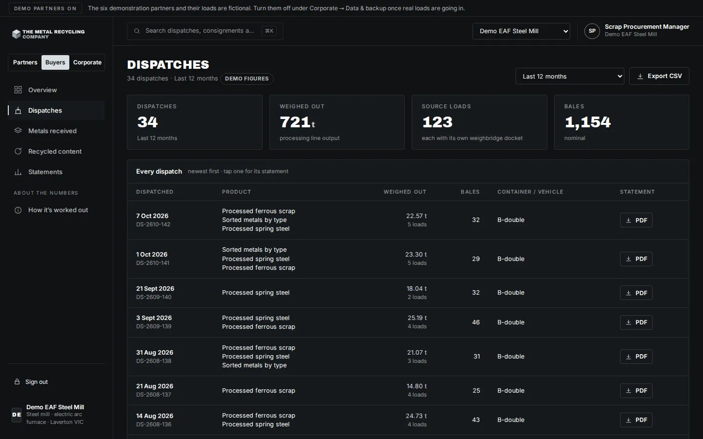

Metal Recycling Connect
Your metal, on the record
Metal Recycling Connect has two sides. Partners who send us metal see every load: weighed in, turned into, recovered, where it went, and the carbon it saved. Buyers who receive it see every dispatch: product, weighed output, bale count, container number and the recycled-content basis. Statements you can hand to a board, an auditor, a council or a mill.
What you see
Four numbers, then everything behind them
Weighed in, recovered, saved
The chain for any period (last month, last quarter, this financial year) with the trend month by month.
Every load, every docket
Weight in, what it became, weight out, where it went. Tap a load for its one-page statement.
Australian buyers or export
How much of your recovered metal went to Australian mills, foundries and manufacturers, and how much was containerised.
Carbon, in plain terms
CO₂-e avoided, trees' worth, cars' worth, with the factor and source next to every figure.

Statements
Reports that go straight into yours
Every statement is an A4 document in the same layout: the chain, the difference it made, Recycling vs landfill, by metal, by site, every load with its docket, and the method with sources. Dark for screen, light for print, saved as PDF.
- Recovery statement: any period, for your whole organisation
- Site statement: one per site, for multi-site partners
- Load statement: one page per load, on demand

Who records what
The Metal Recycling Company does the recording. You do the reading.
There is nothing for a partner to key in. The Metal Recycling Company records every load at the weighbridge and every output off the line, and issues the statements. Your portal is read-only, on any device, with a period picker and a download button.
Multi-site organisations see every site on a map and can pull a statement for each.
Open the demonstration
The buyer side
What a mill, foundry or exporter sees
The same record, read from the other end. Partner names stay confidential; the class and state of origin do not.
- Dispatches: date, consignment number, product, weighed output, bale count, container number and vehicle
- Metals received: by product and over time, for any period
- Recycled content: 100% recovered scrap, Australian origin, post- or pre-consumer by weight, in words you can quote
- Statements: a supply statement for any period, a dispatch statement for every consignment
Straight answers
About this version
What it is
A working portal with six fictional demonstration partners and five demonstration buyers, badged on every page and statement, so you can see exactly how your own numbers would read. The recording side, both portals, statements and factors all work.
What happens next
Partner and buyer logins and a shared record behind the portal are set up as organisations come on. Until then, talk to us and we will walk you through it with your own loads.
See your metal on the record
Open the portal, or tell us about your organisation and we will set it up.